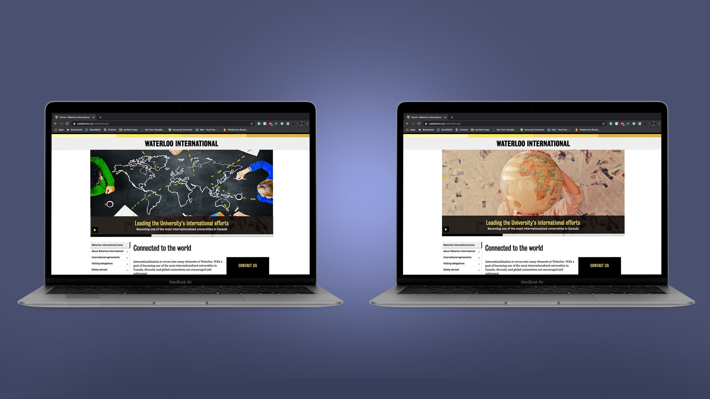
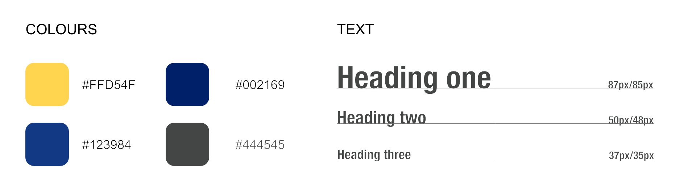

Year
2020
Role
Product designer
developer
deliverables
Website
tools
AdobeXD
Premiere
HTML5/CSS
Bootstrap
During my (virtual) internship, I was able to create a resource page for the Waterloo International team as my final project. These resources focused on marketing and graphic design aspects of the job and would allow for future co-op students to use it as a reference.
Being a multimedia designer and marketing coordinator intern for Waterloo International, my job consisted a lot of using the WCMS system (Drupal 8) to update the Waterloo International website. This would include creating graphics for articles or using photoshop to resize photos to fit certain dimensions. For the learn site (a D2L platform), I also used HTML/CSS to create the site for outbound exchange students. With all these aspects of the job, my manager decided that it would be a good idea to create a collective resource guide for the team to use for future projects.
The first step of the project was listing out all the topics that would be needed to place on the site. I placed everything into four categories: website, photo, illustration, and general. I wanted to be able to cover topics that would be needed for everyday use on the site like how to upload a photo onto WCMS but also some aspects of websites that people don’t think about such as accessibility. With that, I started to write out the copy for each section.
For the website, I roughly sketched out what I wanted it to be on my iPad. My main goal was keeping it simple and clean so anyone would quickly find what they were looking for. This way, both new interns as well as existing workers without computer experience could follow along the tutorials to get the result they wanted. I broke down the site into the video on one side, the text on the other and notes underneath. This would allow people who were visual learners to follow along the video but people who just needed a reminder to just read the text. In addition, each video had subtitles put on them so anyone could follow along even without sound.
After I created the low-fidelity wireframes, I quickly mocked up the high-fidelity with the colours and font I wanted. I chose the colour blue as it represented calm and relaxed which suited what Waterloo International wanted to present to outbound students while the yellow was the University of Waterloo’s colour. I also chose a San-serif font to ensure legibility for anyone reading the site.
As this internship was all work from home, I wasn’t sure what computer everyone would have and so in order to ensure that this website could be viewed on computers of all sizes, I used bootstrap to code out the website. I used the same format for all the video based projects to ensure consistency for the user and used a larger font size for easier legibility. Most workers at Waterloo International were more mature and so doing this would allow for easier communication.
If I had the time, I wish I could have surveyed the staff on which parts of communication and multimedia design they wanted to learn or thought would be helpful in the future. Ultimately, I created a very general guide that would be a lot better for the communications staff but I hope that other departments can use it as well.